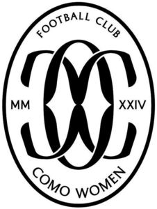

Trade Mark Journal No.2025/013 28 March 2025
WO0000001844761 (16,18,25,28,41)
Office of origin: European Union Intellectual Property Office (EUIPO)
Date of International Registration:17 December 2024
Date of designation in the UK:
17 December 2024

International priority date claimed: 18 July 2024
(European Union Intellectual Property Office (EUIPO))
(019056630)
- Class 16
- Printed matter; newspapers; periodicals; books; photographs [printed]; paper stationery; manuals [handbooks]; writing or drawing books; writing tablets; tickets; postcards; note pads; note books; address books; pencil cups; pens; pencils; erasers; erasing products; rulers; booklets; bookmarkers; posters; calendars; paperweights; gift wrap paper; folders [stationery]; stamps [seals]; blackboards; prints; pictures; paper cutters; poster magazines; paper; cardboard; office requisites, except furniture; handkerchiefs of paper; graphic representations; gums [adhesives] for stationery or household purposes; planners [printed matter]; albums; stationery; office paper stationery; writing stationery; writing cases [stationery]; flags of paper; carrier bags of paper or plastic; envelopes [stationery]; banners of paper; figurines made from paper; paper sacks; photo albums and collectors' albums; money holders; postage stamps; printed emblems; christmas gift wrap.
- Class 18
- Imitation leather; trunks and suitcases; umbrellas and parasols; trunks [luggage]; travel baggage; suitcases; bags; rucksacks; beach bags; umbrellas; pocket wallets; key cases; luggage; boxes made of leather; pouches; credit-card holders; walking staffs; bags for sports; travel cases; bumbags; luggage, bags, wallets and carrying bags; coin holders.
- Class 25
- Clothing; shoes; headgear; scarves; sandals; pyjamas; sweaters; leggings [trousers]; leggings [leg warmers]; layettes [clothing]; jerseys [clothing]; jackets [clothing]; inner soles; heelpieces for footwear; heelpieces for stockings; headbands [clothing]; half-boots; girdles; gymnastic shoes; gloves [clothing]; football shoes; fittings of metal for footwear; combinations [clothing]; coats; clothing of leather; clothing of imitations of leather; clothing for gymnastics; breeches for wear; brassieres; training shoes; boots; berets; sweat-absorbent underwear; bath robes; bandanas [neckerchiefs]; bath sandals; bath slippers; bathing caps; beach clothes; beach shoes; football jerseys; soccer bibs; studs for football boots; sportswear; soles for footwear; sports jackets.
- Class 28
- Playing cards; appliances for gymnastics; cases adapted for sporting articles; teddy bears; indoor football tables; fairground and playground apparatus; sporting articles and equipment; reduced sized goal posts; football blocking sleds; reduced sized footballs; soccer ball bags; soccer ball goal nets; miniature replica football kits; goal posts; shin guards for soccer; foosball tables; soccer ball knee pads; soccer balls; football gloves; soccer goals; sports games; sports equipment; protective padding for sports; toy sporting apparatus; balls being sporting articles; bags specially adapted for sports equipment; toy figures.
- Class 41
- Sports coaching; sporting activities; sporting services; sports and fitness services; sport camp services; tuition in sports; sports officiating; sports training; organisation of sporting events; training of sports players; country clubs providing sporting facilities; entertainment services relating to sport; education, entertainment and sport services; teaching; physical training services; providing recreation facilities; entertainment services; fan club services; editorial consultation; providing online electronic publications, not downloadable; providing on-line publications; publishing services for books and magazines; providing information on-line relating to computer games and computer enhancements for games; publication of electronic newspapers accessible via a global computer network; publication of educational teaching materials; amusement centers; publication of magazines; cultural activities; recreational camps; sporting and cultural activities; education and instruction; arranging of games; provision of non-downloadable games on the Internet; rental of sports grounds; games equipment rental; soccer camps; organization of soccer games; soccer instruction; football academy services; organization of soccer competitions; arranging and conducting of soccer training programs; arranging and conducting of youth soccer training programs; training; publication of texts, other than publicity texts; publication of books; multimedia publishing of magazines, journals and newspapers.
F.C. COMO WOMEN S.R.L.
Representative: METROCONSULT S.R.L., Via Sestriere, 100, I-10060 None (TO), ITALY